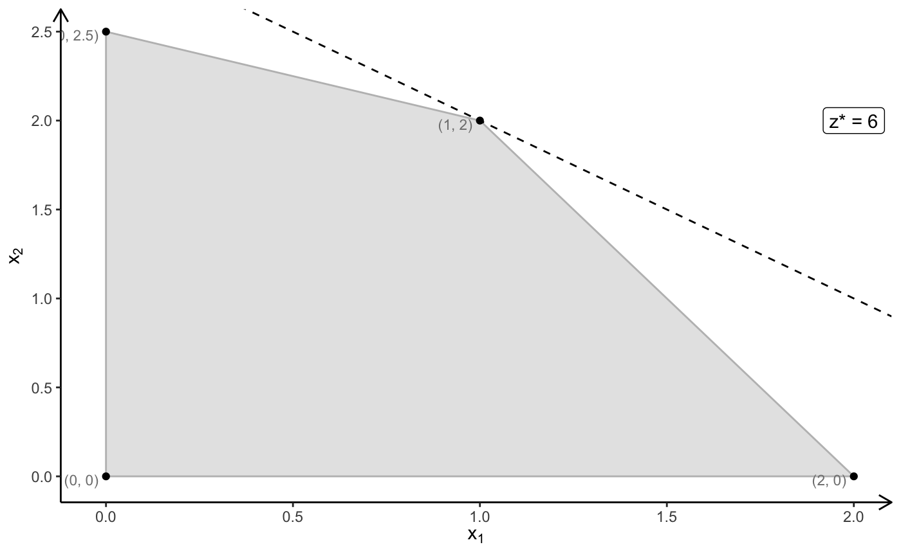
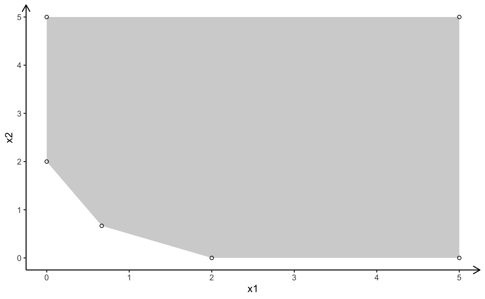

\[ \begin{array}{rrcrcr} \max & 2x_1 & + & 2x_2 & \\ s.t. & 2x_1 & + & 1x_2 & \leq & 4 \\ & 1x_1 & + & 2x_2 & \leq & 5 \\ & x_1,& & x_2 & \geq & 0 \end{array} \]
# Quanti
# primal problem
# optimal solution x = (1, 2), z = 6
A <- matrix(c(
2, 1,
1, 2
), nrow = 2, ncol = 2, byrow = TRUE, dimnames = list(c("R1", "R2"), c("x1", "x2")))
b <- c(4, 5)
c <- c(2, 2)
plot_linear_program(A = A, b = b, obj = c, crit = "max", plotOptimum = TRUE, labels = "coord")
## [1] "Start constructing Simplex Tableau"
## [1] "Tableau constructed"
## [1] "Initial Tableau (Tableau 0)"
## x1 x2 s s b
## R1 2 1 1 0 4
## R2 1 2 0 1 5
## z -2 -2 0 0 0
## [1] "--------------------------------------------------------------------"
## [1] "Iteration 1"
## [1] "--------------------------------------------------------------------"
## [1] "Pivot column: 1"
## [1] "Pivot row: 1"
## [1] "New tableau at the end of iteration 1"
## x1 x2 s s b
## R1 1 0.5 0.5 0 2
## R2 0 1.5 -0.5 1 3
## z 0 -1.0 1.0 0 4
## [1] "--------------------------------------------------------------------"
## [1] "Iteration 2"
## [1] "--------------------------------------------------------------------"
## [1] "Pivot column: 2"
## [1] "Pivot row: 2"
## [1] "New tableau at the end of iteration 2"
## x1 x2 s s b
## R1 1 0 0.6666667 -0.3333333 1
## R2 0 1 -0.3333333 0.6666667 2
## z 0 0 0.6666667 0.6666667 6
## [1] "--------------------------------------------------------------------"
## [1] "Status: End"
## [1] "--------------------------------------------------------------------"\[ \begin{array}{rrcrcr} \min & 4y_1 & + & 5y_2 & \\ s.t. & 2y_1 & + & 1y_2 & \geq & 2 \\ & 1y_1 & + & 2y_2 & \geq & 2 \\ & y_1,& & y_2 & \geq & 0 \end{array} \]
# dual problem
# optimal solution y = (2/3, 2/3), z = 6
A <- matrix(c(
2, 1,
1, 2
), nrow = 2, ncol = 2, byrow = TRUE, dimnames = list(c("R1", "R2"), c("y1", "y2")))
c <- c(4, 5)
b <- c(2, 2)
sense <- -1
relation <- c(">=", ">=")
## [1] "Start constructing Simplex Tableau"
## [1] "Minimization problem: remember to multiply the optimal objective value by (-1)!"
## [1] "Tableau constructed"
## [1] "Artificial variable 'v' added at column 4 and row 1 -> phase I algorithm required"
## [2] "Artificial variable 'v' added at column 6 and row 2 -> phase I algorithm required"
## [1] "BigM-method is used, with bigM = 1000"
## [1] "Initial Tableau (Tableau 0)"
## y1 y2 s v s v b
## R1 2 1 -1 1 0 0 2
## R2 1 2 0 0 -1 1 2
## z -2996 -2995 1000 0 1000 0 -4000
## [1] "--------------------------------------------------------------------"
## [1] "Iteration 1"
## [1] "--------------------------------------------------------------------"
## [1] "Pivot column: 1"
## [1] "Pivot row: 1"
## [1] "New tableau at the end of iteration 1"
## y1 y2 s v s v b
## R1 1 0.5 -0.5 0.5 0 0 1
## R2 0 1.5 0.5 -0.5 -1 1 1
## z 0 -1497.0 -498.0 1498.0 1000 0 -1004
## [1] "--------------------------------------------------------------------"
## [1] "Iteration 2"
## [1] "--------------------------------------------------------------------"
## [1] "Pivot column: 2"
## [1] "Pivot row: 2"
## [1] "New tableau at the end of iteration 2"
## y1 y2 s v s v b
## R1 1 0 -0.6666667 0.6666667 0.3333333 -0.3333333 0.6666667
## R2 0 1 0.3333333 -0.3333333 -0.6666667 0.6666667 0.6666667
## z 0 0 1.0000000 999.0000000 2.0000000 998.0000000 -6.0000000
## [1] "--------------------------------------------------------------------"
## [1] "Status: End"
## [1] "--------------------------------------------------------------------"The dual problem can be formulated (by multiplying the constraints with \((-1)\)) in the following form:
\[ \begin{array}{rrcrcr} \min & 4y_1 & + & 5y_2 & \\ s.t. & -2y_1 & - & 1y_2 & \leq & -2 \\ & -1y_1 & - & 2y_2 & \leq & -2 \\ & y_1,& & y_2 & \geq & 0 \end{array} \]
It is strait forward to construct a simplex tableau that is dual feasible (primal optimal) but not primal feasible (not dual optimal):
dual_feasible_tableau <- rbind(cbind(-A, diag(nrow(A)), -b), c(c, rep(0, nrow(A)), 0))
#dual_feasible_tableau <- rbind(cbind(A, diag(nrow(A)), -b), c(c, rep(0, nrow(A)), 0))
dual_feasible_tableau## y1 y2
## R1 -2 -1 1 0 -2
## R2 -1 -2 0 1 -2
## 4 5 0 0 0Now the dual simplex can be applied
## [1] "Initial Tableau (Tableau 0)"
## y1 y2
## R1 -2 -1 1 0 -2
## R2 -1 -2 0 1 -2
## 4 5 0 0 0
## [1] "--------------------------------------------------------------------"
## [1] "Iteration 1"
## [1] "--------------------------------------------------------------------"
## [1] "Dual pivot row: 1"
## [1] "Dual pivot column: 1"
## [1] "New tableau at the end of (dual simplex) iteration 1"
## y1 y2
## R1 1 0.5 -0.5 0 1
## R2 0 -1.5 -0.5 1 -1
## 0 3.0 2.0 0 -4
## [1] "--------------------------------------------------------------------"
## [1] "Iteration 2"
## [1] "--------------------------------------------------------------------"
## [1] "Dual pivot row: 2"
## [1] "Dual pivot column: 2"
## [1] "New tableau at the end of (dual simplex) iteration 2"
## y1 y2
## R1 1 0 -0.6666667 0.3333333 0.6666667
## R2 0 1 0.3333333 -0.6666667 0.6666667
## 0 0 1.0000000 2.0000000 -6.0000000
## [1] "--------------------------------------------------------------------"
## [1] "Status: End"
## [1] "--------------------------------------------------------------------"